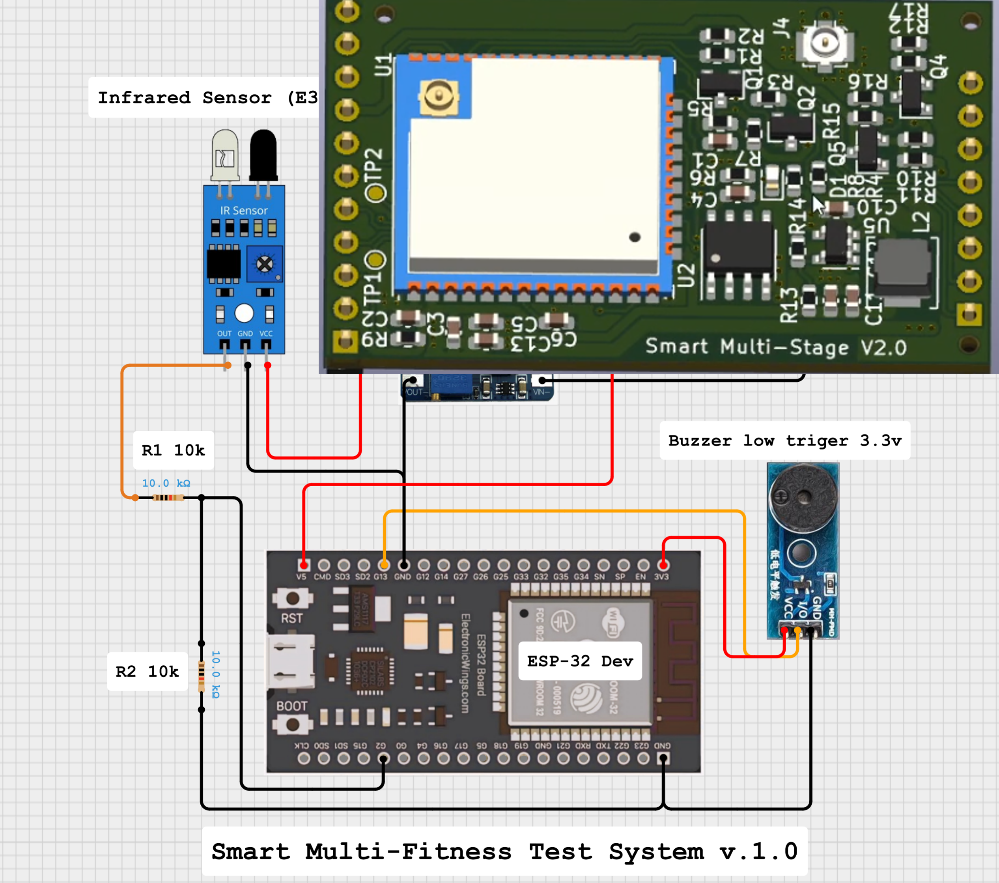
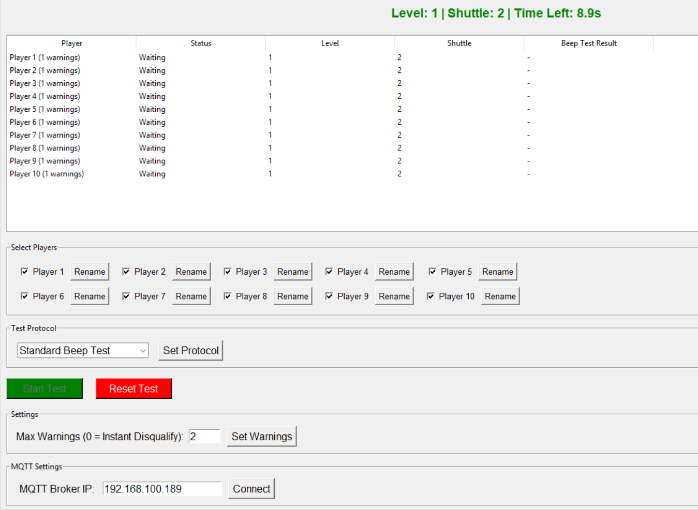
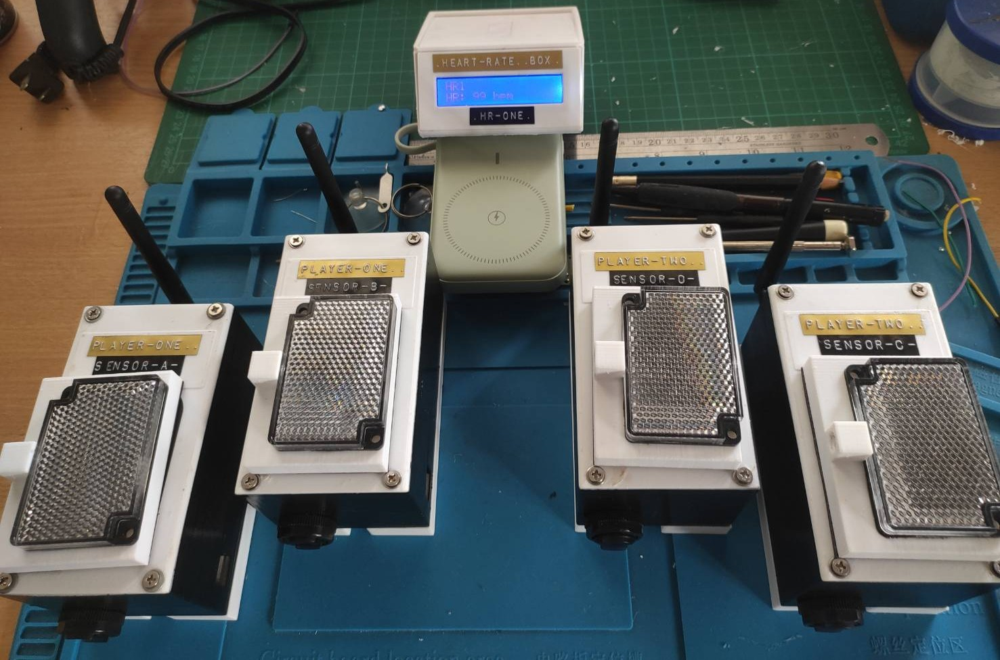
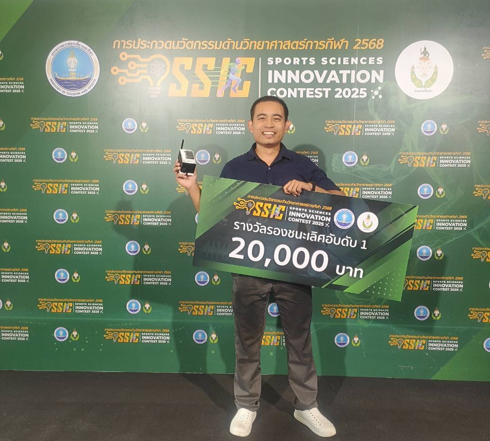
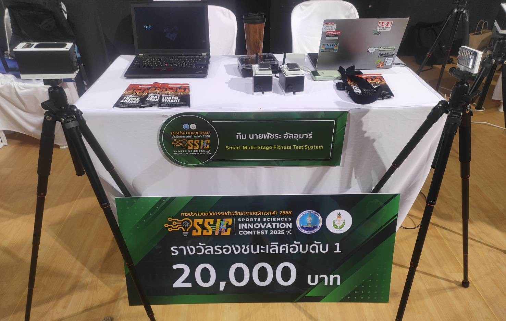

ประกวดนวัตกรรมด้านวิทยาศาสตร์การกีฬา
(Sport Science Innovation Contest 2025)
รางวัล รองชนะเลิศ อันดับที่ 1 🥈
ผลงาน “Smart Multi-Stage Fitness Test System”
เป็นนวัตกรรมระบบทดสอบสมรรถภาพทางกายที่ถูกพัฒนาขึ้นเพื่อยกระดับการทดสอบแบบดั้งเดิม (Beep Test หรือ Multi-Stage Fitness Test) โดยผสานเทคโนโลยีสมัยใหม่ เช่น IoT (Internet of Things) และระบบประมวลผลข้อมูลแบบเรียลไทม์ ช่วยให้การทดสอบมีความแม่นยำ อัตโนมัติ ลดความผิดพลาดจากมนุษย์ และเพิ่มประสิทธิภาพในการเก็บข้อมูลของนักกีฬาโครงการนี้ออกแบบและพัฒนาทั้งหมดโดยผู้จัดทำเพียงคนเดียว อาศัยการบูรณาการความรู้ทางด้านวิศวกรรมและวิทยาศาสตร์การกีฬาเข้าด้วยกัน เพื่อสร้างสรรค์นวัตกรรมที่ตอบโจทย์ทั้งด้านเทคนิคและการใช้งานได้จริง
🚀 ฟังก์ชันการทำงานของ Smart Multi-Stage Fitness Test
✅1.ตรวจจับการวิ่ง Beep Test (Multi-Stage Fitness Test) ระบบสามารถตรวจจับและบันทึกการวิ่งตามโปรโตคอล Beep Test ได้อย่างแม่นยำ พร้อมรองรับการเชื่อมต่อกับอุปกรณ์ Heart Rate Monitor ชั้นนำ เช่น Polar และ Garmin เพื่อเก็บข้อมูลอัตราการเต้นหัวใจแบบเรียลไทม์
✅2.ทดสอบความเร็วและความคล่องตัว (Agility & Speed Test) ทำงานเสมือน Timing Gate ที่ใช้จับเวลาการวิ่งของนักกีฬาได้อย่างแม่นยำและอัตโนมัติ แต่เป็นระบบที่พัฒนาขึ้นเอง ช่วยลดต้นทุนและใช้งานได้จริงในสนามแข่งขันหรือการฝึกซ้อม
✅3.ทดสอบ RAST (Running-based Anaerobic Sprint Test) ระบบรองรับการทดสอบ RAST ซึ่งเป็นการวัดสมรรถภาพด้านความเร็วและกำลัง (Power) ของนักกีฬา โดยเก็บข้อมูลรอบการวิ่งและช่วงพักอัตโนมัติ
สรุป: ระบบนี้สามารถทดสอบและประเมิน พลังงานแอโรบิก (Aerobic System) และ พลังงานแอนแอโรบิก (Anaerobic System) ได้ครบถ้วน ช่วยให้นักวิทยาศาสตร์การกีฬาและโค้ชสามารถวิเคราะห์สมรรถภาพนักกีฬาได้รอบด้านในระบบเดียว

💡 Technologies Used in the Project
- Embedded System & Microcontroller ใช้ไมโครคอนโทรลเลอร์ในการควบคุมการทำงานของเซ็นเซอร์และการประมวลผลเบื้องต้น โดยพัฒนาโปรแกรมด้วยภาษา C เพื่อความเสถียรและประสิทธิภาพสูงสุด
- Reflex Sensor Technology ใช้เซ็นเซอร์อินฟราเรดชนิด Reflex ในการตรวจจับการเคลื่อนไหวของนักกีฬา ซึ่งมีความแม่นยำสูงและตอบสนองได้รวดเร็ว รองรับการทดสอบที่ต้องใช้ความถูกต้องในระดับมิลลิวินาที
- ออกแบบระบบสื่อสารข้อมูลแบบไร้สายระหว่างอุปกรณ์ฝั่งฮาร์ดแวร์และซอฟต์แวร์หลัก โดยข้อมูลถูกส่งมายังโปรแกรมที่พัฒนาด้วย Python เพื่อประมวลผล วิเคราะห์ และแสดงผลแบบเรียลไทม์
- พัฒนาโปรแกรมหลักด้วยภาษา Python เพื่อจัดการข้อมูลจากเซ็นเซอร์ เชื่อมต่อกับ Heart Rate Monitor และสร้าง Graphical User Interface (GUI) สำหรับผู้ใช้งาน ให้การทดสอบเป็นไปอย่างอัตโนมัติและใช้งานง่าย
- ออกแบบและสร้างบอดี้อุปกรณ์ขึ้นเองทั้งหมดด้วย 3D Printing Technology ใช้พลาสติกชนิด PETG ทนความร้อนสูง หลอมละลายที่อุณหภูมิ 220 องศาเซลเซียส ทำให้สามารถผลิตโครงสร้างที่แข็งแรง น้ำหนักเบา และปรับแต่งได้ตามความต้องการของการใช้งานจริง
💾 IoT (ESP32 & MQTT)
📡 Wireless Communication & Data Integration
🐍 Software Development (Python)
📦 3D Design & Fabrication

*ตัวอย่าง Interface โปรแกรมขณะทําการทดสอบพร้อมกัน 10 คน

*รูปภาพอุปกรณ์ต้นแบบที่พร้อมใช้งาน

🌟 “ถ้าจุดสตาร์ทเราอยู่ข้างหลังคนอื่นก็แค่ต้องออกแรงวิ่งให้มากกว่าคนอื่นเท่านั้นเอง”
มันอาจไม่ใช่รางวัลใหญ่ที่สุดแต่สำหรับผม การได้ทำงานชิ้นนี้จนสำเร็จใช้งานได้จริง แก้ปัญหาได้จริงมันทำให้รู้ว่าพลังของการลงมือทำอะไรเพียงลำพังก็สามารถพาเราไปถึงเส้นชัยได้ไม่จำเป็นต้องมีทีมใหญ่ ๆ หรือคนช่วยมากมาย และสำหรับผมนี่คือรางวัลที่ภูมิใจที่สุดแล้ว
